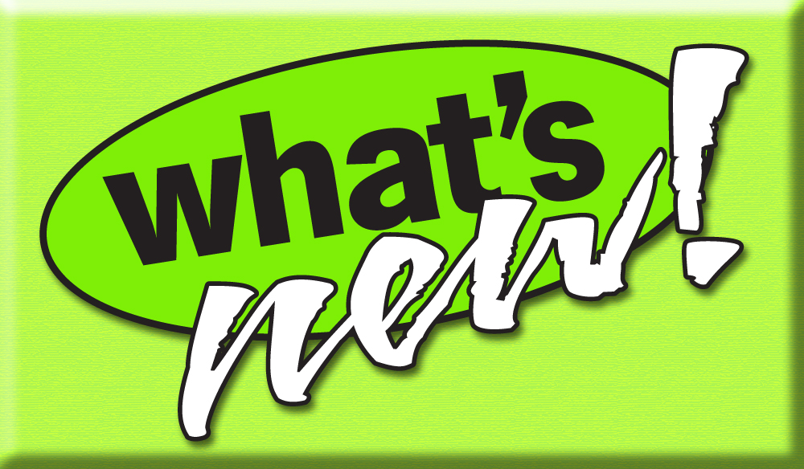

New External Sources

Mathematica
- Built-in arithmetic does ground evaluation
- Mathematica as a source of arithmetic axioms
- Accepts conjoined requests, of all relevant literals
- Returns axiom for first literal
- Allows SPASS-XDB to enter TFA division of CASC
Web Search
- The obvious thing to do
- Query search engine, match results with template, build axiom
- Currently limited to unary and binary predicates
- Leverage search engines, and still provide answers